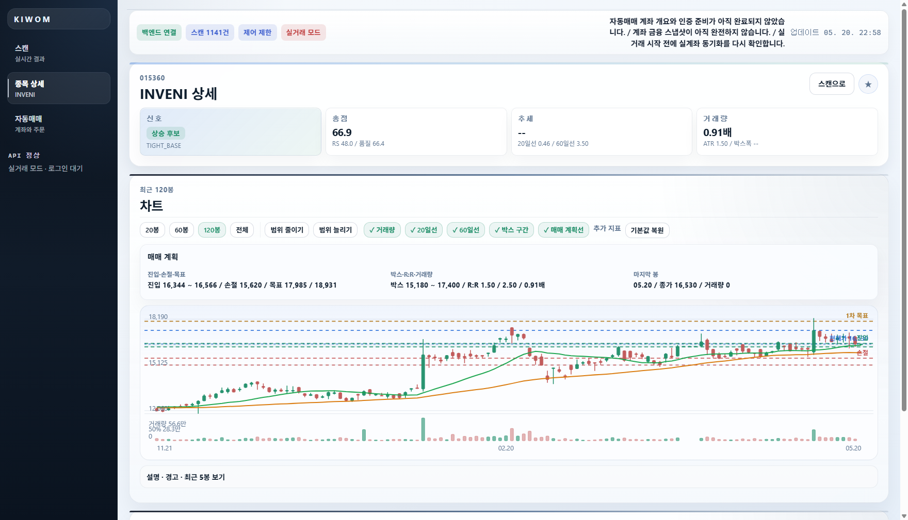
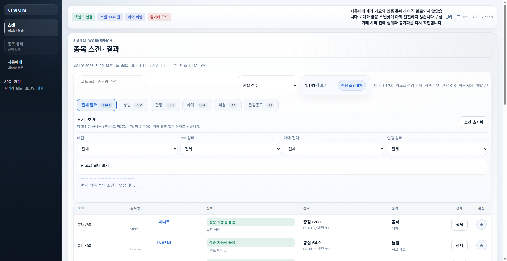

주어진 기능 구현에서 멈추지 않고, 다시 보기 쉬운 구조까지 만드는 개발자입니다.
냉매 밸브 액추에이터, SCM·PSU, AUTOSAR 기반 코드 설계와 자동화 툴 개발을 거치며 하드웨어 동작과 소프트웨어 흐름을 함께 다뤄왔습니다. 반복되는 실무를 더 빠르게 이해하고 검증할 수 있도록 정리하는 방식에 강점이 있습니다.
Developer philosophy
자동차 전장 SW, AUTOSAR, 모터 제어, Python 툴 개발을 다루며 반복되는 실무를 더 빠르게 이해할 수 있는 구조로 정리합니다.
01
소개
냉매 밸브 액추에이터, SCM·PSU, AUTOSAR 기반 코드 설계와 자동화 툴 개발을 거치며 하드웨어 동작과 소프트웨어 흐름을 함께 다뤄왔습니다. 반복되는 실무를 더 빠르게 이해하고 검증할 수 있도록 정리하는 방식에 강점이 있습니다.
02
실무 기록
회로2팀 소프트웨어 담당 / 사원
한온 냉매 밸브 액추에이터 1세대·2세대와 PT 센서 액추에이터 선행 개발을 맡았습니다. 반도체 공급 이슈로 인한 P사 제품 대체, MCU 변경에 따른 펌웨어 재설계, 공정 매칭까지 연결해 실제 양산 대응과 선행 개발을 함께 경험했습니다.
전장 SW 설계팀 / 연구원
Steering Wheel Column Module Platform 1.0·2.0과 Power Seat Unit Platform 2.0을 중심으로 담당했습니다. AUTOSAR 기반 코드 설계, 유닛 제어 SW 개발, 기능 안전 문서, 진단·통신 검증 흐름을 함께 다뤘습니다.
R&D 아키텍처설계실 / 책임연구원
AUTOSAR 기반 자동 코드 생성 툴 프로그램을 개발하고 있습니다. ARXML을 분석해 코드 생성 입력을 정리하고, WSL/GCC 기반 단위 유닛 검증과 자동 테스트 환경까지 연결해 툴 개발과 검증 자동화를 함께 다루고 있습니다.
03
개인 프로젝트
웹 기반 MCU 가상화 학습 환경
실제 타겟 보드가 없어도 PSU/SCM에서 다루는 C 코드 흐름을 웹에서 가상으로 실행해 보는 교육용 사이트입니다. 코드를 실행하면 핀 상태, 레지스터 값, 그래프, 모터 회전이 함께 바뀌어 코드가 하드웨어 동작으로 이어지는 과정을 확인할 수 있습니다.


멀티 에이전트 작업 하네스
큰 작업을 하나의 AI 세션에 몰아주면 조사, 구현, 검증, 리뷰가 섞여 놓친 부분을 늦게 발견하기 쉽습니다. 이 보드는 작업을 역할별 방으로 나누고, 각 에이전트의 주장, 근거, 대기 상태, 후속 액션을 한 화면에 남겨 사람이 최종 판단하기 쉽게 만든 운영 화면입니다.


중고거래 후보 수집·비교
같은 물건을 찾더라도 사이트마다 제목, 가격, 부품 포함 여부, 등록 상태가 달라 직접 비교하는 시간이 길어집니다. 이 도구는 허용된 범위에서 관심 후보를 수집하고, 중복을 정리한 뒤 가격 범위와 확인 메모를 한 화면에 모아 구매 판단이 아니라 후보 검토 시간을 줄이기 위해 만든 화면입니다.


주식 이론·조건 검색
원하는 조건으로 후보 종목을 찾고, 종목 상세에서 차트·거래량·박스권·매매 계획선을 함께 보며 주식 이론 기준에 맞는 구간을 검토하도록 만든 화면입니다. 단순 주문 화면이 아니라 후보 선정 이유, 차트 해석, 계좌 준비 상태를 나눠 보여줘 어떤 근거로 종목을 봤는지 다시 확인할 수 있게 했습니다.


Jira 하위 작업 리뷰·진척 관리
일반 Jira는 기능은 많지만, 하위 작업 리뷰와 진행 확인만 자주 볼 때는 화면 이동과 로딩이 무겁습니다. 그래서 필요한 이슈만 빠르게 검색하고, 트리 구조로 묶어 보고, Sub-task 안에서 리뷰·진척도·첨부를 바로 확인할 수 있는 관리 화면으로 다시 정리했습니다. 팀마다 다른 메모 양식도 일정한 형식으로 맞춰 관리자가 읽기 쉽게 정리할 수 있게 했습니다.